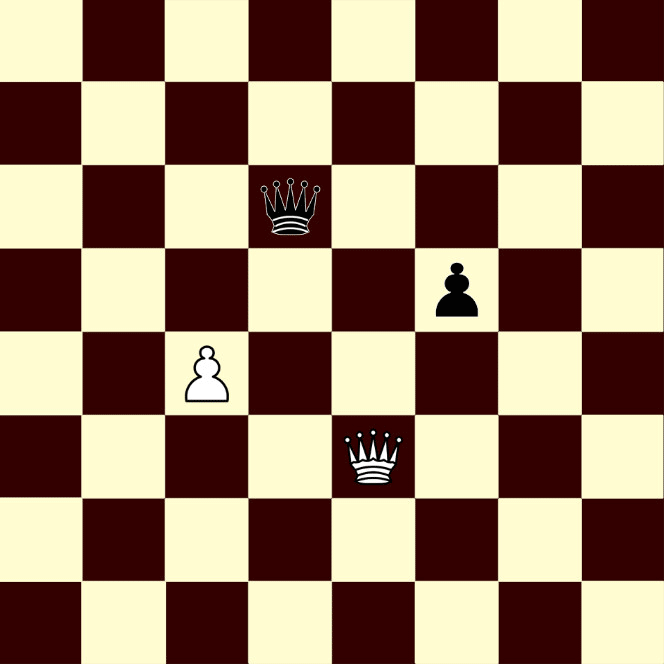

หมากรุกสากล
Queen
เป็นตัวหมากรูปมงกุฎยอดแหลม มีอำนาจการเดินมากที่สุดในหมากรุกสากล มีเพียงตัวเดียวตอนเริ่มเกม กติกาการเดิน Queen มีดังนี้
เดินได้ในทั้ง 8 ทิศทางรอบตัว ไม่จำกัดระยะ จนกว่าจะเจอหมากขวาง หรือสุดกระดาน สามารถกินหมากในจัตุรัสที่เดินได้
ตำแหน่งการเดิน